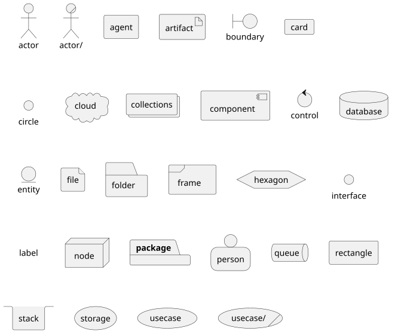
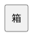
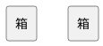
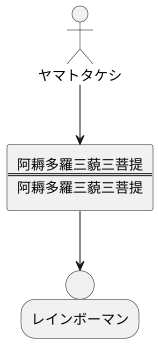
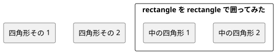
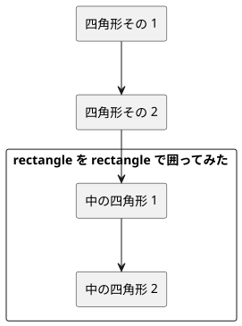
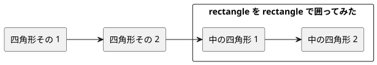
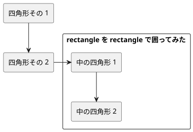
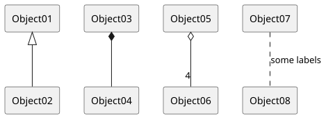

本日は思考整理ツールとして PlantUML の目的外使用方法例を記載する。何故目的外使用なのかというと、昨日の日記でも触れたように PlantUML は本来 UML を描くためのソフトウェアだからである。
PlantUML に限らないが昨日からまとめ始めているテキストファイルから図を生み出す方法論の真髄は、よくあるテキストエディタでもってサクサクと図を描いたり修正したりという作業を効率よく行うことにあり、思考の整理はテキストエディタでテキストを編集しているときに頭の中で行なわれることにある。
なのでこの方法論での主役は、テキストエディタでもなく、紹介するソフトウェアでもなく、あなたの頭脳ということになる。少くとも状況整理や問題解決のための情報整理に集中する思考形態が開発されやすくなるので、取り組むことをお勧めしたい。
最初に PlantUML で思考を整理する際に活用できる部品を紹介する。以下のような部品を使うことができる。

これらの部品のことを PlantUML ではエレメントと呼ぶので以降はエレメントと呼ぶことにする。UML で使われるものばかりではあるが思考整理目的で使うのであるから自由に選んで使ってよい。使用頻度が最も高くなるのは rectangle かもしれない。その名の通り長方形が描かれる。
上図のエレメントリストは以下のソースを PlantUML で変換すると生成される。
@startuml
actor actor
actor/ "actor/"
agent agent
artifact artifact
boundary boundary
card card
circle circle
cloud cloud
collections collections
component component
control control
database database
entity entity
file file
folder folder
frame frame
hexagon hexagon
interface interface
label label
node node
package package
person person
queue queue
rectangle rectangle
stack stack
storage storage
usecase usecase
usecase/ "usecase/"
@endumlソースファイルでの各エレメントの書き方は以下のようになる。
rectangle "四角形その 1"または
rectangle "四角形その 2" as r2rectagnel はエレメントの形状を示し "" で囲まれた文字列はエレメント内もしくはエレメントのそばに表記される文字列になる。" as r2" は何かと言うとエレメントに r2 という別名をつけている。
なぜエレメントに別名をつけるのだろうか。
下の例を見てほしい。
@staruml
rectangle "箱"
rectangle "箱"
@enduml人の感覚としては長方形が 2 つ並ぶと直感的に感じてしまうが、結果は下図のようになる。

複数のエレメントに同じ文字列が書かれていると PlantUML はそれらを区別することができない。区別できないとどうなるかというと上図のようにそれらを同一のエレメントとして解釈し、図上で 1 つのエレメントとしてまとめてしまう。つまり 1 つのエレメントのみ表示される。
表示される文字列は同一であるけれども、そのようなエレメントを複数使うというのは日常的にある。むしろ同じ見た目の "箱" が複数描けないと困ることがほとんどだ。
それでは同じ見た目の "箱" を複数描きたいときはどうすればいいのかというと、PlantUML ではそれぞれの "箱" に別名をつけることで解決する。
@staruml
rectangle "箱" as box1
rectangle "箱" as box2
@enduml上のように書くと PlantUML は下図のように複数の "箱" を描いてくれる。

また後で述べるリレーションをエレメント間に引く場合に、エレメントの別名を決めておくとパンチの量を減らすとができるというメリットもある。エレメント内の文字列を長くしたくなるというのはよくあることだ。
たとえばレインボーマンの変身呪文などで
@staruml
rectangle "阿耨多羅三藐三菩提\n====\n阿耨多羅三藐三菩提" as charm
@endumlなどとした場合、後述するリレーションを引くときに下のように別名を指定して書くことができる。
@staruml
actor "ヤマトタケシ" as takeshi
rectangle "阿耨多羅三藐三菩提\n====\n阿耨多羅三藐三菩提" as charm
person "レインボーマン" as rainbow
takeshi -down-> charm
charm -down-> rainbow
@enduml
図が描かれる方向についても触れておく。

上図ではエレメントが横に並べられているが、これは PlantUML の自動判別機能によりデプロイメント図が選択されていることによる (デプロイメント図という名前はここでは覚えなくて良い)。
この自動判定を off にする方法は少なくともこの日記が書かれた時点では提供されていない。PlantUML は本来 UML を描くためのソフトウェアなのであって、@startuml と @enduml に囲まれたテキストがどのように書かれているかによって UML のどの図なのかを自動判別する。
PlantUML を使った思考整理ではこのデプロイメント図を、本来の目的とは異なるが、応用することになる。もちろん他の図で適したものがあればそれを使ってもよい。UML を描くツールを使いはするが UML を描くわけではないのでツールは自由に使ってよい。
各エレメント間にリレーション、つまり矢印線を引くと図に方向が発生する。何も指定しなければ方向は縦方向である。

上図では図は上下に流れているが、左右に方向を変更することもできる。左右に方向を変えるのに最も簡便な方法としてはソースに以下の行を加えることがある。
left to right direction下図で上記コードを最初の行に入れている。

図の配置をもう少し制御したいと願うのは人の自然な心の発露である。あまり自由度はないのだが、リレーションの方向を指定するとで、多少は次のエレメントをどの方向に置くのかを、ある程度コントロールすることができる。ただしあくまである程度ということにはなる。

ソースを見ればわかるが、元のソースのリレーションに対して
-->下のように right を加えただけである。
-right->このリレーションの方向には up、down、left、right の 4 つを指定することができる。逆に言えばこの 4 つしか指定できない。
PlantUML で図を作成していく場合、エレメントの選択、リレーションの設定、デフォルト方向の設定、リレーションの方向を駆使して、図を作成していくことになる。そのようになるのだけれど自由度はほとんどない。PlantUML がレイアウトのほぼ全てを決定する。リレーションが曲線によくなるが (というよりも直線になるのはまれである)、それをユーザが無理矢理直線にする方法は存在しない。
リレーションの装飾もなんとかならないかと思ってしまうのも、やはり人の情である。PlantUML を使うこの方法の場合では UML で使われるリレーションの修飾や変更を適用することはできる。逆に言えばこれ以外の変更はできないということでもある。PlantUML 以外の他のツールも必要な所以であるし、他のツールでも事情は同様である。

図のレイアウトの制御はやはりニーズとして多く、Web の検索などで "plantuml layout" などを検索語として指定すると "PlantUML のレイアウト辛い" だとか "打倒！PlantUMLのなにこれレイアウト" などの悲鳴サイトがやたらとヒットする。気持がわかりすぎてつらい。
そのような中、地道にレイアウトをコントロールするためのノウハウをまとめている人もいる。PlantUML GraphViz Layout - mark.george/Wiki などが網羅とは言い難いが代表かもしれない。
もし作成した図をプレゼンテーションなどに使いたいという人も多いと思われる。そのような場合は上記のようなサイトの情報を駆使して頑張ることになる。
ただしこの連載でのソフトウェアの使用目的はあくまでも思考の整理と見える化であって、図のレイアウトに腐心することではない。ツールをいじることに快感を見出して本来の目的を見失ってはいけない。
ただ出てきた図の見え方に思考は影響を受けるのでレイアウトに対して無頓着になるのもあまりよくない。そのあたりは各人自分自身と相談しながら良い落とし所を探ってほしい。
今日のまとめは以下のようなものになる。
次回は PlantUML による Work Breakdown Structure の描きかたについて説明する。